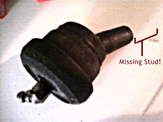
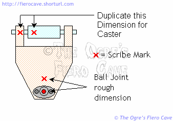
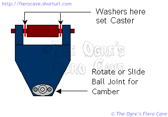

Go Home
Site Map
Go Home
Site Map
Controlling Control Arms
The control arm bushings are a pain in the ass but they aren't as difficult aren't as people make them out.
For 84-87 control arms using OE or aftermarket Polyurethane: (I'm not getting into specialty bushings like those from 8Shark and others. Contact those guys for info on their products.)
- The rear and lower front arms are non adjustable.
- For caster, the front upper arm is adjusted by changing the washers between the bushings and the mounting bracket. The camber is adjusted at the ball joint.
Ball joints
Warning: You should replace the lower front Ball Joint. Even if they look good or some test passed, 20+ years of the spring trying constantly to split the joint and wear from hit/bump it only a matter of time before it dies. And unlike top front and rear joints, there's often no warning it's going to fail.
If Lower Joint fails, potentially can cause major wreck because no steering of dead wheel and can lock the wheel from turning at all.
How Bad?
Like this:

Source: dejulio in forum post.
Note that a broken stud is damage from over torquing the nut too. When you work on or replace a BJ, watch your torque. Can take days to years to show damage.
The front UCA ball joints are the only adjustable ones. All others are pressed into the arm.
The factory UCA ball joint allows about 1° of change. To alter the setting you take out the bolts and rotate the shell 180°. It's not much adjustment but it may be enough to get into spec.
Moog Problem Solver ball joints are slotted for camber adjustment. Loosen the bolts, set camber, and tighten the bolts. (Other brands of replacement joints may also allow this. Some simply duplicate the OE joint.)
The pressed in ball joints may also be tack welded. The weld must be carefully ground away before pressing out the joint.
Tools
You can often borrow, with a deposit, tools for pressing both ball joints and bushings. Autozone and Pep Boys offer this service. I'm not going to explain how to use the press. If you can't figure it out then you probably shouldn't be messing with this job.
- Bushing Press. See Bushings
- Ball joint separator. You can make one easy enough. Rodney sells one that doesn't cost much.
- A tie rod end seperator. Avoid the "Pickle fork" kind if you are saving rod ends. A small Pickle fork can help you work the long bolt out of the upper control arm. Use it to load the end washer while you turn the bolt back and forth.
- If needed, Dremel tool or some other small grinder to remove the tack welds. (Some are welded.)
Before taking the UCA off, measure it's position.
People keep asking how to get the front upper arm back into its original position. This question usually comes up after the arm has been removed... Too bad, if people had taken some simple measurements before they started things would be much easier. It also helps if you keep those washers in their original order but don't count on them going back in the same way they came out.
Because of the way 84-87 Fiero is built the only measurements needed are the for/aft position of the arm on the pivot bolt and the ball joint location.
Scribe reference marks on the arm and hardware as needed. You want clear marks that won't be mistaken for tool marks or something later. I use X or > marks. There is a trick to insure good clear arrow marks. Start the lines at the point and pull away. Don't worry about making them pretty. Just make sure they have good clear points. Make as many reference marks as you need on the arm and the surrounding hardware.
It doesn't matter much how you choose to take your measurements as long as they are accurate and repeatable. Use a good ruler. A set of dividers comes in handy to. Make a note of the position of the control arm when you made the measurement. You'll need the control arm close to that position again later. Carefully measure the distance between your marks and write them down.
If you are installing or replacing slotted upper ball joints... To get a rough measurement on the ball joint, measure from the scribe marks on the UCA to the hole the grease fitting goes into.
If you are replacing an OE style joint with another OE style one, simply trace the outline of the joint to the UCA. That will help you remember what direction the joint was offset.

Now take apart the arm. Keep the washers in their original order. They will be your starting place later. The two inner washers are the most important. I'll explain them more in a minute.
Install the new bushings.
Now fit the arm with the washers in their original order. Tighten the nut all the way home. (Hold the arm in the same position it was when you made your earlier measurements.)
Measure the distance between marks just like you did earlier.
If needed, switch the inner washers to duplicate the original measurements.
The washers set the caster. As long as you can get the arm back into it's original for aft position, the caster should be within spec even if it's not identical to original.
It's common for the washers to be different thickness. If you can't get the arms into position with the washers you have, you'll need to find others. If you can't get the washers new, then scrounge the salvage yards for some more of them.
The Caster Washers
Note: The kit noted below was discontinued long ago. Moog's kit has been discontinued as well. The Fiero Store has a kit, current as of 3/1/2011, part number 57016.
The 2 washers between the UCA and mounting bracket set the caster. According to GM, the sum of all washers used here must equal 12mm of total thickness. (If not, you bind the bushings and pinch the UCA. Not good.)
If you forgot which two were originally in the middle, pick two that total 12mm thick.
GM documents I've seen indicate that there was a kit that had a 3mm and 9mm washer in it. This kit gives a plus/minus 1° adjustment vs. using two 6mm washers.

When reinstalling the arm you could run into one of two problems:
- You have two 6mm washers and can't get the kit to make an adjustment.
- You have the kit installed already but need to center the arm on the bracket.
A way around this could be to check the thickness of the outer end washers. These outer washers should be fairly common in the salvage yards. You may be able to buy matching spares in a parts store.
If the outer washers are 3mm thick, you could use 4 of them in the inner area to allow adjustment similar to the kit. To make the adjustment you'd do one of the following. (Adjustment is relative to centering the UCA on the bracket.)
- Put one washer in front and three in the back for a +1 degree adjustment from centered.
- Put two washers on each side to center the UCA on the bracket.
- Put three washers in front and one in the back for a -1 degree adjustment from centered.
It's conceivably possible that you could also use end washers and STEEL flat washers. (Grade 8 [class 10.9] washers recomended.) The most critical thing is that the combined thickness of all the washers between the UCA and bracket equals 12mm.
Polyurethane in Control Arms
I'm not a big fan of using polyurethane in control arms. Flat out I think its way more trouble than it's worth for cars that are mainly driven on the street. Since people are going to install them anyway, here's some stuff that should help.
As I explained in the bushing article, Polyurethane bushings in the control arms will mainly serve as a bearing. It will absorb some impact thru compression.
They pivot against the inner sleeve and the ends. Clean everything that will touch the ends or inside of the bushings before installing them. Make sure the surfaces are smooth. This includes the washers or frame areas that will contact the ends of the bushings. Dirt and rough surfaces can make even well greased bushings squeak and groan.
Don't worry much about the bushing shell. Just make sure there are no lumps of rubber left. The bushing doesn't rotate against the shell. If it does, something is wrong. The bushing should fit very snug into the outer shell. They will often need to be squeezed in with a large C clamp. You do not need, or even want, to grease the outside of the bushing or the shell. You want the shell to grip that surface the best it can.
Maintenance
Never use oil based product. Only Silicone or Silicone with Teflon.
You will need to lube them. Problems are:
- Too many makers and worse, they can products formulas etc. so very little to know when and how often.
- Too many way to install them.
- Noise in obvious but Polly can wear without noise.
Many use Grease fittings to make that easier. They drill a hole thru outer sleeve and busning.